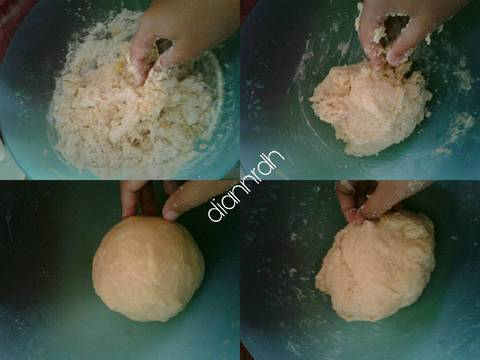
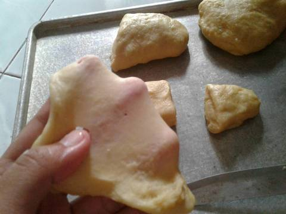

Resep Kue Maryam

Bahan bahan :
- 250 gr tepung terigu
- 1 butir telur
- 3 sdm margarin, lelehkan
- 100 ml air hangat
- 2 sdm susu bubuk(optional)
- 1/2 sdt garam
- margarin leleh untuk olesan
- minyak untuk merendam
Langkah-langkah
- Campur semua bahan jadi satu

- Diamkan adonan sampai mengembang 2 kali dari ukuran awal

- Kemudian panggang dalam oven selama 15 menit dalam suhu 180 derajat celcius

- Setelah 15 menit ambil roti dari dalam oven dan roti sudah siap di hidangkan